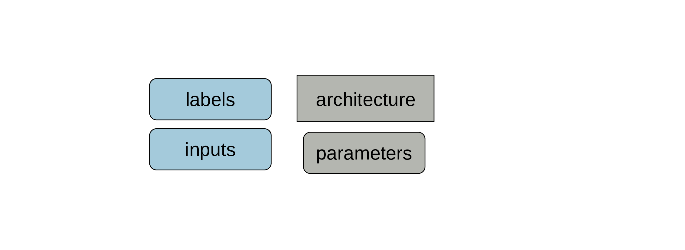
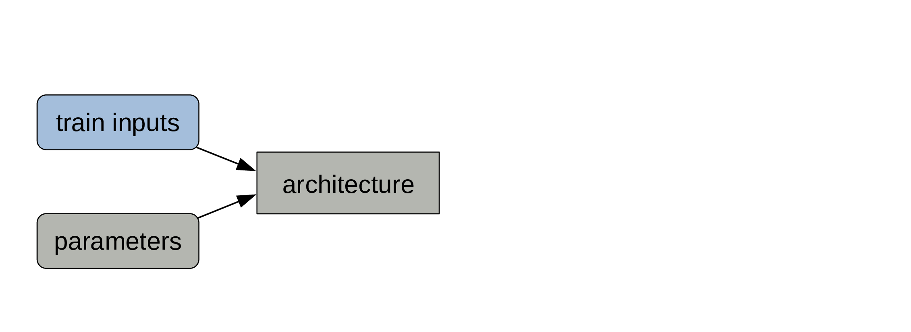
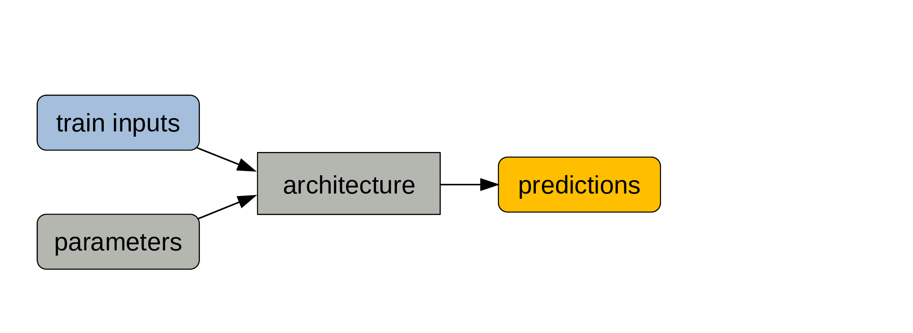
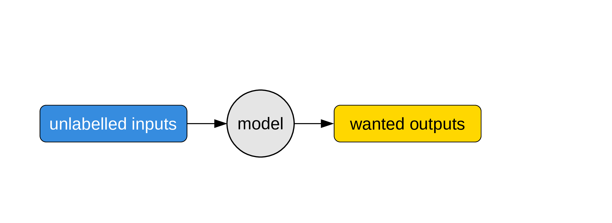
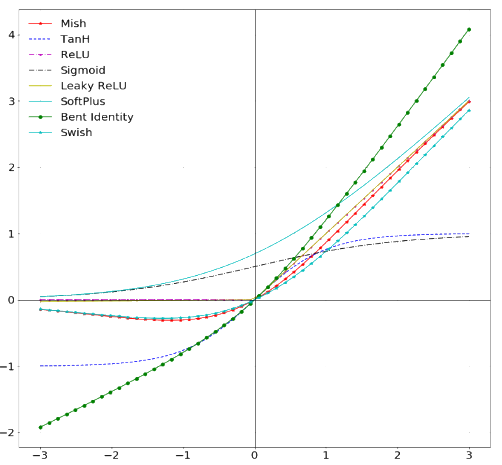

Intro to ML for the humanities
Content from the workshop slides for easier browsing.
Definitions
Artificial intelligence (AI)
Any human-made system mimicking animal intelligence. This is a large and very diverse field.
Machine learning (ML)
A subfield of AI that can be defined as computer programs whose performance at a task improves with experience. This includes statistical inference and deep learning.
Deep learning (DL)
A subfield of ML using artificial neural networks with two or more hidden layers.
Natural language processing (NLP)
A subfield of AI focused on human languages. It can use statistical inference or deep learning.
Why has ML become so popular?
New types of tasks
ML allows to achieve previously impossible tasks.
Let’s take the example of image recognition:
In typical computing, a programmer writes code that gives a computer detailed instructions of what to do.
Coding all the possible ways—pixel by pixel—that an image can represent, say, a dog is an impossibly large task: there are many breeds of dogs, the image can be a picture, a blurred picture, a drawing, a cartoon, the dog can be in all sorts of positions, wearing clothes, etc.
There just aren’t enough resources to make the traditional programming approach able to create a computer program that can identify a dog in images.
By feeding a very large number of dog images to a neural network however, we can train that network to recognize dogs in images that it has never seen (without explicitly programming how it does this!).
Old concept …
… new computing power.
The concept is everything but new: Arthur Samuel came up with it in 1949 and built a self-learning Checkers-playing program in 1959.
Machine learning consists of feeding vast amounts of data to algorithms to strengthen pathways, so the excitement for the approach became somewhat dormant due to the lack of computing power and the lack of training data at the time.
The advent of powerful computers, GPUs, and massive amounts of data have brought the old concept to the forefront.

So how does it all work?
It depends on the type of learning.
Supervised learning
- Regression is a form of supervised learning with continuous outputs.
- Classification is supervised learning with discrete outputs.
Supervised learning uses training data in the form of example input/output pairs.
Goal: find the relationship between inputs and outputs.
Unsupervised learning
Clustering, social network analysis, market segmentation, PCA … are all forms of unsupervised learning.
Unsupervised learning uses unlabelled data.
Goal: find structure within the data.
Reinforcement learning
The algorithm explores by performing random actions and these actions are rewarded or punished (bonus points or penalties).
This is how algorithms learn to play games.
The case of supervised learning
Decide on an architecture
The architecture won’t change during training.
The type of architecture you choose (e.g. CNN, Transformer) depends on the type of data you have (e.g. vision, textual). The depth and breadth of your network depend on the amount of data and computing resource you have.
Set some initial parameters

You can initialize them randomly or get much better ones through transfer learning.
While the parameters are also part of the model, those will change during training.
Get some labelled data

When we say that we need a lot of data for machine learning, we mean “lots of labelled data” as this is what gets used for training models.
Make sure to keep data for testing

Those data won’t be used for training the model. Often people keep around 20% of their data for testing.
Pass data and parameters

The train data are the inputs and the process of calculating the outputs is the forward pass.
The outputs are predictions

Compare predictions with labels

Since our data was labelled, we know what the true outputs are.
Calculate train loss

The deviation of our predictions from the true outputs gives us a measure of training loss.
Adjust parameters

The parameters get automatically adjusted to reduce the training loss through the mechanism of backpropagation. This is the actual training part.
This process is repeated many times. Training models is pretty much a giant for loop.
From model to program

Remember that the model architecture is fixed, but that the parameters change at each iteration of the training process.

While the labelled data are key to training, what we are really interested in is the combination of architecture + final parameters.

When the training is over, the parameters become fixed. Which means that our model now behaves like a classic program.
Evaluate the model

We can now use the testing set (which was never used to train the model) to evaluate our model: if we pass the test inputs through our program, we get some predictions that we can compare to the test labels (which are the true outputs).
This gives us the test loss: a measure of how well our model performs.
Use the model

Now that we have a program, we can use it on unlabelled inputs to get what people ultimately want: unknown outputs.
This is when we put our model to actual use to solve some problem.
Artificial neural networks
In biological networks, the information consists of action potentials (neuron membrane rapid depolarizations) propagating through the network. In artificial ones, the information consists of tensors (multidimensional arrays) of weights and biases: each unit passes a weighted sum of an input tensor with an additional—possibly weighted—bias through an activation function before passing on the output tensor to the next layer of units.
Artificial neural networks are a series of layered units mimicking the concept of biological neurons: inputs are received by every unit of a layer, computed, then transmitted to units of the next layer. In the process of learning, experience strengthens some connections between units and weakens others.

While biological neurons are connected in extremely intricate patterns, artificial ones follow a layered structure. Another difference in complexity is in the number of units: the human brain has 65–90 billion neurons. ANN have much fewer units.


The information in biological neurons is an all-or-nothing electrochemical pulse or action potential. Greater stimuli don’t produce stronger signals but increase firing frequency. In contrast, artificial neurons pass the computation of their inputs through an activation function and the output can take any of the values possible with that function.


Learning
The process of learning in biological NN happens through neuron death or growth and the creation or loss of synaptic connections between neurons.
In ANN, learning happens through optimization algorithms such as gradient descent which minimize cross entropy loss functions by adjusting the weights and biases connecting each layer of neurons over many iterations.
Types of ANN
Fully connected neural networks

Each neuron receives inputs from every neuron of the previous layer and passes its output to every neuron of the next layer.
Convolutional neural networks

Convolutional neural networks (CNN) are used for spatially structured data (e.g. images).
Images have huge input sizes and would require a very large number of neurons in a fully connected neural net. In convolutional layers, neurons receive input from a subarea (called local receptive field) of the previous layer. This greatly reduces the number of parameters. Optionally, pooling (combining the outputs of neurons in a subarea) reduces the data dimensions.
Recurrent neural networks
{kind=link}
Recurrent neural networks (RNN) such as Long Short-Term Memory (LSTM) are used for chain structured data (e.g. text).
They are not feedforward networks (i.e. networks for which the information moves only in the forward direction without any loop).
Transformers
A combination of two RNNs (the encoder and the decoder) is used in sequence to sequence models for translation or picture captioning.
In 2014 the concept of attention (giving added weight to important words) was developed, greatly improving the ability of such models to process a lot of data.
The problem with recurrence is that it is not easily to parallelize (and thus to run fast on GPUs).
In 2017, a new model—the transformer—was proposed: by using only attention mechanisms and no recurrence, the transformer achieves better results in an easily parallelizable fashion.
With the addition of transfer learning, powerful transformers emerged in the field of NLP (e.g. Bidirectional Encoder Representations from Transformers (BERT) from Google and Generative Pre-trained Transformer-3 (GPT-3) from OpenAI).
ML limitations
Data bias
Bias is always present in data.
Document the limitations and scope of your data as best as possible.
Problems to watch for:
- Out of domain data: data used for training are not relevant to the model application.
- Domain shift: model becoming inadapted as conditions evolve.
- Feedback loop: initial bias exacerbated over the time.
The last one is particularly problematic whenever the model outputs the next round of data based on interactions of the current round of data with the real world.
Solution: ensure there are human circuit breakers and oversight.

Transformation of subjects
Algorithms are supposed to help us, not transform us (e.g. YouTube recommendation algorithms).
Bugs
Tools
Many options
Here are just a few:
- scikit-learn: a Python ML library built on top of SciPy.
- Natural Language Toolkit (NLTK): a suite of Python libraries geared towards teaching and research.
- spaCy: Python library geared towards production.
- torchtext, part of the PyTorch project (and many options of added layers on top such as PyTorch-NLP): Python library.
- GenSim: Python library.
- Stanford CoreNLP: Java library.
- Many libraries in the Julia programming language.
Which one to choose?
Choose an open source tool (i.e. stay away from proprietary software such as MATLAB).
- Researchers who do not have access to the tool cannot reproduce your methods (open tools = open equitable research).
- Once you graduate, you may not have access to the tool anymore.
- Your university may stop paying for a license.
- You may get locked-in.
- Proprietary tools are often black boxes.
- Long-term access is not guaranty (problem to replicate studies).
- The licenses you have access to may be limiting and a cause of headache.
- Proprietary tools fall behind popular open-source tools.
- Proprietary tools often fail to address specialized edge cases needed in research.
Resources
Neural nets
3Blue1Brown by Grant Sanderson has a series of 4 videos on neural networks which is easy to watch, fun, and does an excellent job at introducing the functioning of a simple neural network:
- What are NN? (19 min)
- How do NN learn? (21 min)
- What is backpropagation? (14 min)
- How does backpropagation work? (10 min)
As you develop your own ML models, if you find that your mathematical background is shaky, 3blue1brown also has an excellent series of videos on linear algebra and an equally great one on calculus.
Open-access preprints
Advice and sources
Getting help
Stack Overflow: